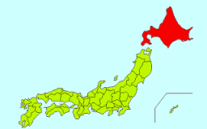
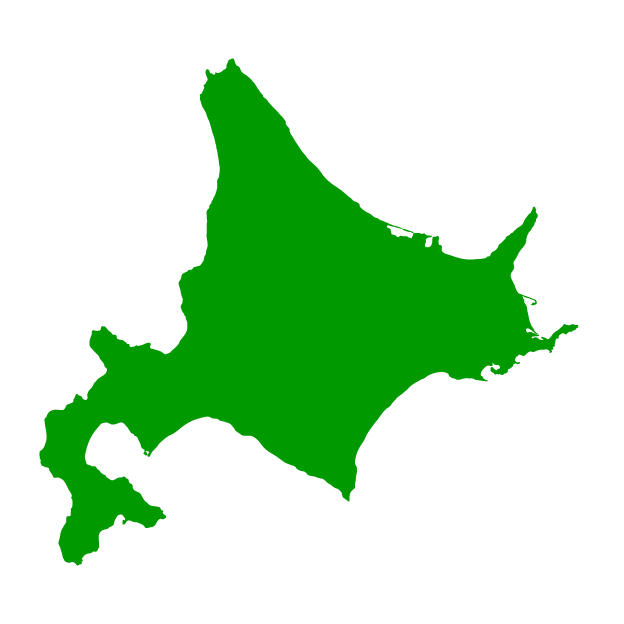
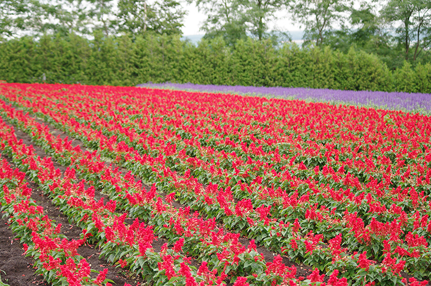

北海道
Hokkaido
the second largest island of Japan, and the largest and northernmost prefecture. The Tsugaru Strait separates Hokkaido from Honshu. The two islands are connected by the underwater railway Seikan Tunnel. The largest city on Hokkaido is its capital, Sapporo, which is also its only ordinance-designated city.

